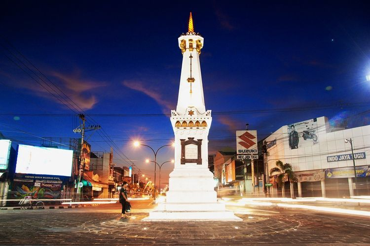
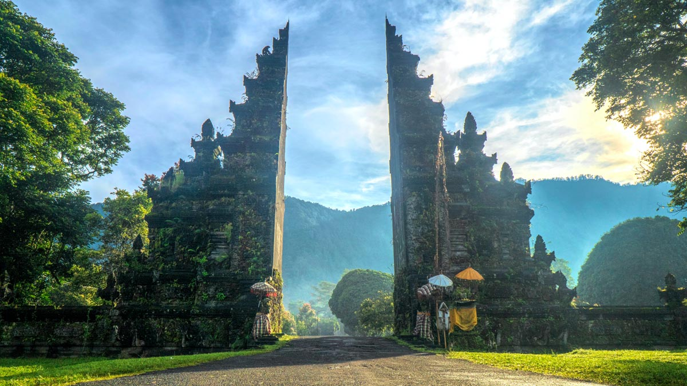
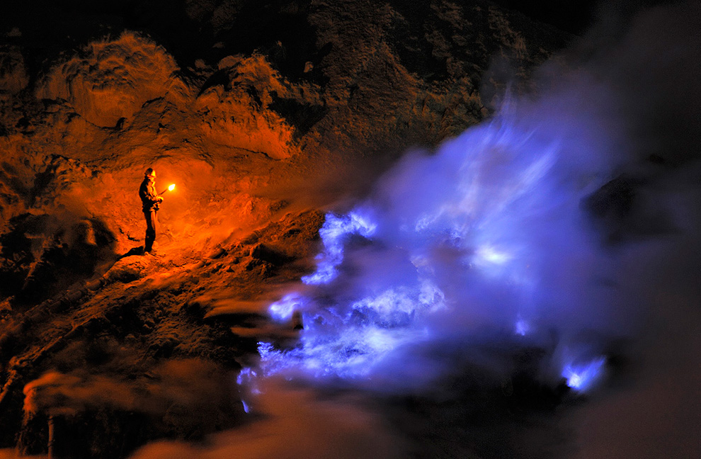

Top 3 Rekomendasi Daerah Wisata
Di Indonesia
Di Indonesia

|  | YogyakartaMerupakan kota yang sangat terkenal di Indonesia dan pernah menjadi ibukota negara pada saat penjajahan. Kota ini pula terkenal karena tatanan kota yang menarik serta terdapat banyak objek wisata yang menjadi favorit wistawan lokal maupun asing. Tempat destinasi favorit di Jogja antara lain :Jalan Malioboro, Candi Prambanan, Keraton Yogyakarta, Keraton Tamansari Di dekat kota Yogyakarta terdapat juga tempat wisata yang sangat terkenal, yaitu Candi Borobudur yang berada di Kota Magelang yang jaraknya tidak terlalu jauh dari kota Yogyakarta. |
|
Bali Siapa lagi yang tidak mengetahui Bali, Semua orang pasti pernah mendengar tempat yang bernama Bali bahkan sangat banyak turis yang datang dari luar untuk berlibur disini. Saat ingin pertama kali ke Bali hal pertama yang anda harus lakukan adalah menemukan informasi tentang objek wisata yang ada di pulau Bali. Sangat banyak tempat liburan yang menarik yang ada di Bali seperti Wisata kuliner, Wisata air, Wisata Budaya dll hal ini yang membuat bali masuk dalam Top 3 Wisata di indonesia |
 |
|  | Jawa Timur Taman Wisata Alam Kawah Ijen merupakan tempat wisata yang berada di Indonesia, Tepatnya di Kabupaten Banyuwangi, Jawa Timur. Taman wisata ini memiliki ketinggial 2.386 meter diatas permukaan laut. Blue Fire adalah salah satu fenomena yang dinantikan para wisatawan karena tidak setiap wisatawan dapat melihat Blue Fire. Blue Fire hanya muncul diwaktu tertentu dan tidak bisa di prediksi. Tapi, jangan khawatir. meskipun tidak dapat melihat Blue Fire, kita tetap bisa melihat indahnya sunrise dan sunset dari puncak Kawah Ijen. |